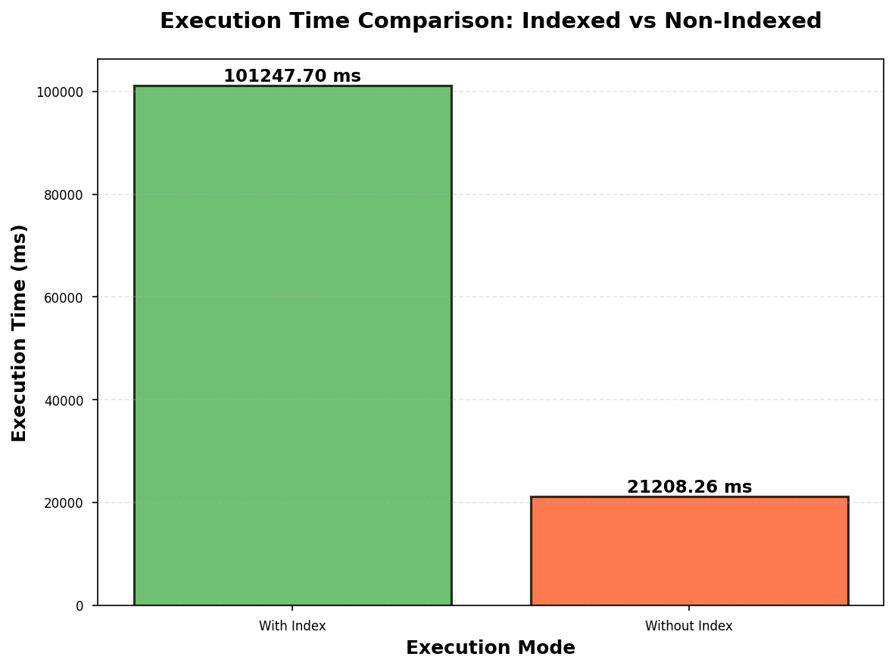
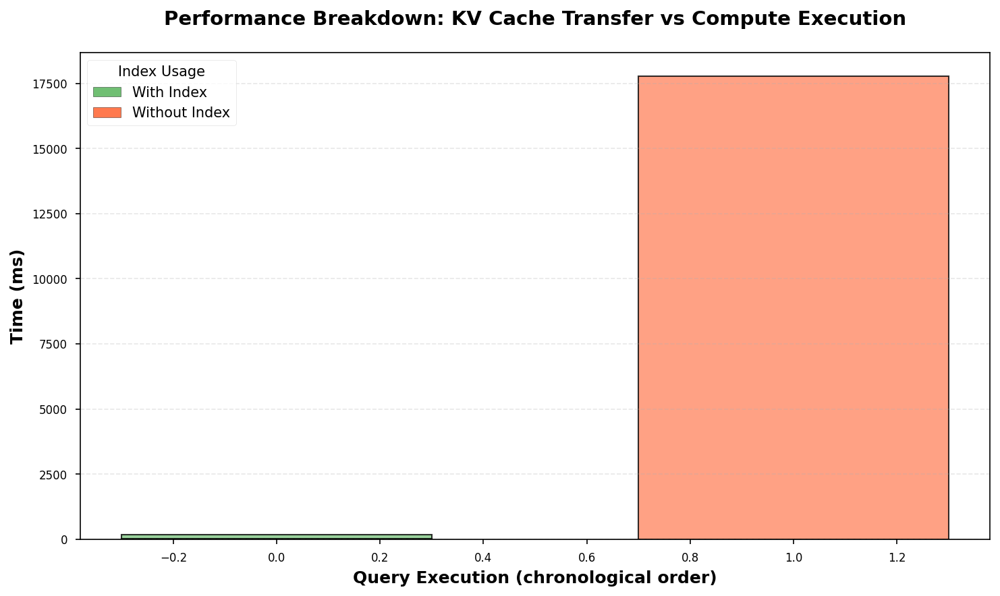

Nano-vLLM: Interactive Indexing & Querying
Upload structured data, build an index with KV cache pruning, run hybrid queries, and inspect live analytics.
Analytics
Compare index versus baseline performance, inspect sparsity trends, and monitor KV cache timings.
Execution Time Comparison

Sparsity Analysis

Performance Breakdown
